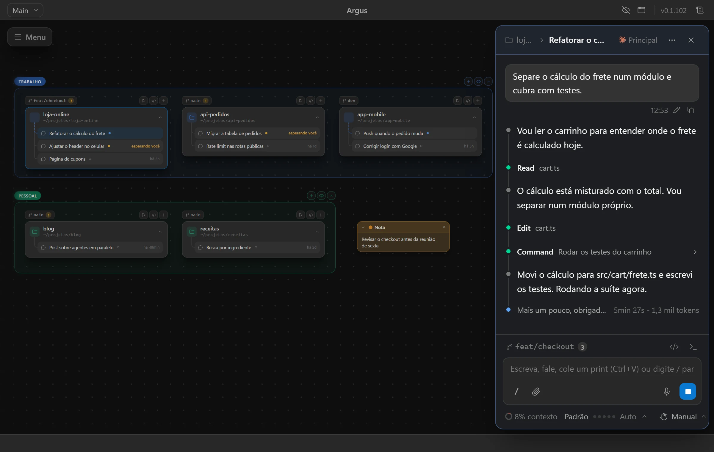

Converse com o Claude Code
O chat completo de cada pasta, com o mesmo CLAUDE.md, configurações e MCPs do terminal.
AgenteAcompanhe todos os seus projetos e conversas do Claude Code num canvas infinito. Grátis e de código aberto, roda na sua máquina com a assinatura que você já tem.



Usado por quem trabalha na
Arraste suas pastas para o canvas, comece as conversas e acompanhe tudo de longe. O Argus avisa quando alguém precisa de você.
Ver o que dá para fazerO chat completo de cada pasta, com o mesmo CLAUDE.md, configurações e MCPs do terminal.
AgenteAbra conversas do Codex ao lado das do Claude e compare o que cada um entrega.
AgenteConversas do Gemini CLI e do Cursor CLI no mesmo canvas, cada uma com a conta que você escolher.
Agente
Abra o repositório no GitHub pela pasta e peça a revisão completa de uma branch.
Code review
O selo da branch mostra os arquivos não comitados, e um clique abre o diff de cada um.
Versionamento
Um botão acima da pasta roda o script dev do package.json e mostra o endereço.
ServidoresAbra de outro computador o canvas, as conversas e os terminais que ficaram rodando em casa.
Acesso remotoAcompanhe o uso e as conversas, peça por texto, voz ou foto e receba aviso quando algo termina.
Celular
Shell ou Claude Code numa pasta, com modo foco e a conta do Claude do grupo.
Terminal
A lista de servidores locais mostra o que os agentes deixaram no ar, com atalho para encerrar.
InfraArgus x editor de código
Com vários agentes rodando ao mesmo tempo, o trabalho deixa de ser editar arquivo e passa a ser acompanhar, aprovar e revisar.
| O que muda | Editor de código | Argus |
|---|---|---|
| Vários projetos | Uma janela por projeto, uma de cada vez na frente. | Todos os projetos num canvas, agrupados por cliente ou contexto. |
| Conversas com agentes | Um painel lateral, com uma conversa à vista por vez. | Várias conversas em paralelo, cada uma com o status: trabalhando, precisa de você ou concluída. |
| Saber a hora de agir | Você volta para conferir se terminou. | O Argus avisa quando uma conversa termina ou pede permissão. |
| Agentes | Um agente por extensão, cada um no seu painel. | Claude Code, Codex, Gemini CLI e Cursor CLI lado a lado. |
| Contas do Claude | Uma conta logada por vez. | Uma conta por grupo: trabalho, freela e pessoal separados. |
| Terminais e servidores | Terminais presos no rodapé de cada janela. | Terminais soltos no canvas e a lista do que os agentes deixaram rodando. |
| Longe do computador | Feito para usar na frente dele. | Continue pelo notebook ou pelo celular, com o acesso remoto. |
O Argus não substitui o seu editor: ele tem árvore de arquivos e editor para ajustes rápidos, e você continua usando o seu editor no resto.
Fluxo
Escreva o pedido, acompanhe o plano, aprove o que precisa e revise o resultado. Cada conversa passa pelas mesmas etapas, e você vê em qual delas está.
Escreva, cole um print ou dite o que precisa.
Casos de uso
Deixe os agentes no trabalho de volume enquanto você fica com as decisões.
Peça a revisão de uma branch e acompanhe o agente lendo, testando e propondo correções.
Cole o link da issue, deixe o agente levantar o contexto e abrir a mudança.
Saia de perto do computador e siga as conversas pelo celular, aprovando o que precisa de você.
Logs, terminal e código lado a lado no canvas, com o agente seguindo as pistas.
Atualize o CLAUDE.md e os docs do projeto conforme o código muda.
Atualizar dependências, limpar warnings e escrever notas de versão sem ficar olhando.
Os mesmos MCPs, agentes e configurações do seu Claude Code. Nada para configurar de novo.
Vários agentes
Use o agente que fizer mais sentido para cada tarefa. Cada conversa escolhe o agente e a conta, lado a lado no mesmo canvas.
Sua stack
Agente
Modelos
Onde roda
Mac, Windows ou Linux, com os recursos de cada um por trás. Projetos no WSL rodam dentro da distro.
 macOS
macOS Windows
Windows LinuxWSL
LinuxWSL“O Argus aumentou minha produtividade. Consigo gerir vários projetos ao mesmo tempo e não perco a memória de nenhum deles. Ele agiliza muito o meu dia a dia, e ficou muito mais fácil integrar com outras ferramentas, manter o histórico e trocar de IA quando preciso.”

Instale, abra suas pastas e comece a conversar. Quando funcionar para você, compartilhe com o time.
Para você
Para o time
Para contribuir
Permissões
Escolha o modo de permissão de cada conversa, aprove comandos um a um e veja tudo o que foi feito. Nada roda escondido.
Saber maisPermitir este comando?
$ pnpm test src/cart
O que dizem as pessoas que já trabalham com o Argus no dia a dia.
O Argus aumentou minha produtividade. Consigo gerir vários projetos ao mesmo tempo e não perco a memória de nenhum deles.
Ele agiliza muito o meu dia a dia, e ficou muito mais fácil integrar com outras ferramentas, manter o histórico e trocar de IA quando preciso.
Estamos usando o Argus nos nossos projetos e conseguimos melhorar muito a contextualização e a memória da IA, que antes eram uma dificuldade por serem inconstantes.
Agora a IA performa muito mais, com agentes especialistas para cada frente.
Uso no desenvolvimento de protótipos para validar experiências junto ao time de PM.
Tem sido uma ferramenta essencial para os projetos que estou liderando.
Estamos testando com o nosso time e temos percebido que, para trabalhar com workspaces e vários desenvolvedores, ele tem nos ajudado muito.
Sou o criador do Argus e uso todos os dias, melhorando cada vez mais. Ele tem me ajudado muito a desenvolver inúmeros projetos.
Hoje faço 100% do meu desenvolvimento nele, e o nível de produtividade e de entregas mudou de patamar.
O que mais perguntam sobre o Argus, os agentes e a sua assinatura.
Fale com a genteUm app desktop com um canvas infinito onde cada pasta de projeto vira um bloco. Dentro dele você conversa com os agentes de código e acompanha o que cada um está fazendo.
O agente é o mesmo. A diferença é ver todas as conversas juntas, com status, diff, permissões e subagentes, sem caçar abas.
Não. O Argus roda o claude instalado na sua máquina, com a assinatura que você já tem.
O app roda local, sem servidor no meio. As conversas vão para o modelo do mesmo jeito que iriam pelo terminal. No acesso remoto, a ponte entre os aparelhos só repassa dados criptografados de ponta a ponta.
Sim. Com o acesso remoto, você usa o Argus de casa por outro computador ou pelo navegador do celular, pareando com um código ou QR code.
Sim. Tem versão para macOS (Apple Silicon), Windows 10 e 11 e Linux (AppImage), além de projetos dentro do WSL.
Modelos mudam. Agentes mudam. O Argus lê os mesmos arquivos do seu Claude Code e deixa tudo à vista, sem prender você a nada.
Construindo o jeito aberto de acompanhar agentes de código.
O Argus é a base para trabalhar com vários agentes ao mesmo tempo, com tudo à vista e na sua máquina.
Baixar o Argus